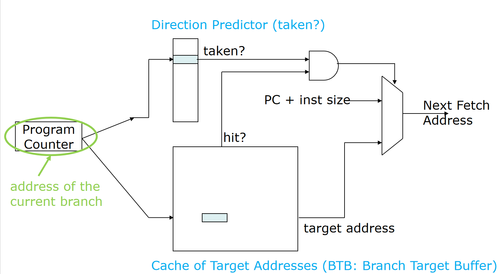
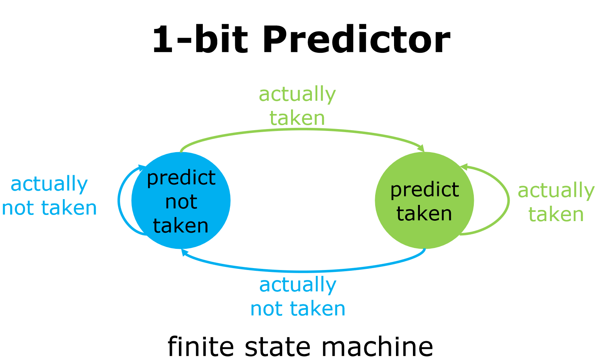
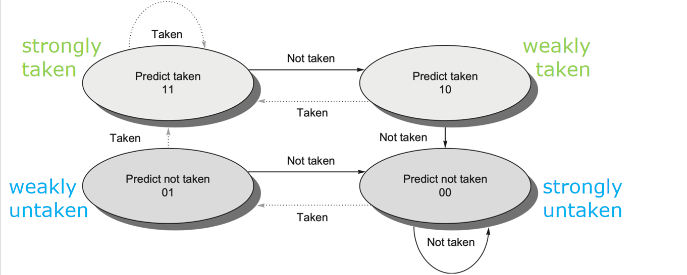
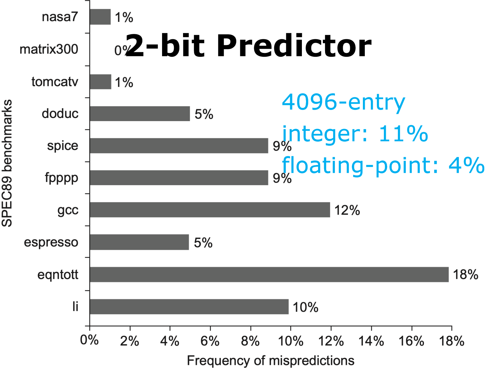
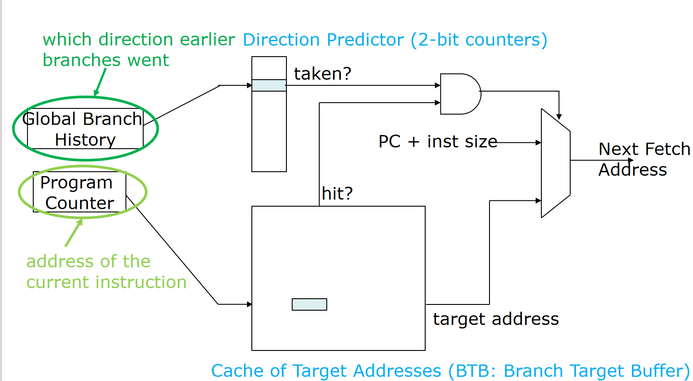

计算机体系结构3-1-1:动态并行机制
第一部分：从编译器的“静态智慧”到硬件的“动态决策”
1.1 性能瓶颈的本质：僵化的指令流
我们先来思考一个根本问题：为什么一个程序不能无限快地执行？
因为指令之间存在着依赖关系（Dependencies）。a = b + c; d = a * 2; 这两条指令，第二条必须等待第一条完成，因为它需要 a 的计算结果。这是真数据依赖（True Data Dependency）。除了数据依赖，还有因为分支、跳转指令带来的控制依赖（Control Dependency）。这些依赖关系构成了程序固有的逻辑顺序，打破它就会导致错误。
面对这些依赖，我们的基础流水线是**按序执行（In-Order Execution）**的。也就是说，指令严格按照它们在程序中出现的顺序进入流水线，也严格按顺序完成。这种方式简单、易于实现，但非常“死板”。
想象一下下面这段代码：
fdiv.d f0, f2, f4 // 浮点除法，耗时很长
fadd.d f10, f0, f8 // 依赖 f0
fsub.d f12, f8, f14 // 不依赖 f0 和 f10
在按序执行的流水线中，fdiv.d 是一条高延迟指令，它可能会在执行阶段（EX）停留几十个时钟周期。由于 fadd.d 依赖于 fdiv.d 的结果 f0，它必须停顿，等待 f0 被写回。
但最令人惋惜的是 fsub.d 这条指令。它和前两条指令没有任何数据依赖关系，完全可以“插队”到前面去执行。但在僵化的按序执行模型下，它只能眼睁睁地在译码（ID）阶段等待，直到 fdiv.d 和 fadd.d 这两位“老大哥”慢悠悠地走完流程。这种由于数据相关而阻塞了后续无关指令执行的情况，正是按序执行的性能瓶颈所在。
1.2 两种解决思路：静态调度 vs. 动态调度
如何打破这种僵局，让 fsub.d 这样的独立指令能够提前执行？业界提出了两种截然不同的设计哲学：
-
静态调度（Static Scheduling）：
- 核心思想：在程序运行之前，由“聪明的”编译器来解决问题。
- 工作方式：编译器在编译阶段对代码进行深入分析，找出指令间的依赖关系，然后对指令进行重排序（Instruction Reordering/Scheduling），将那些独立的指令尽可能地提前，插入到因为数据相关而产生的“空泡（bubble）”中，从而填补流水线的停顿。
- 优点：硬件设计相对简单，因为复杂的逻辑判断都由软件完成了。
- 致命弱点：编译器是“静态”的，它无法预知程序在**运行时（Runtime）**才会确定的信息。比如，内存访问的地址（指针）、分支跳转的方向等。对于
if (a > 0)这样的分支，编译器只能进行猜测。对于*p = 10;这样的访存，如果编译器不能确定指针p和其他访存指令的地址是否冲突，就必须做出最保守的选择，即假设它们可能冲突，从而限制了重排序的自由度。
-
动态调度（Dynamic Scheduling）：
- 核心思想：在程序运行之中，由“更聪明的”硬件来实时决策。
- 工作方式：硬件在运行时动态地检查指令的依赖关系。一旦某条指令的操作数准备就绪，并且执行单元空闲，这条指令就可以被发射（Issue）执行，即使它前面的指令还在等待操作数。这实现了乱序执行（Out-of-Order Execution, OoOE）。
- 优点：能够处理静态调度无法解决的、依赖于运行时信息的相关性，从而最大程度地发掘ILP。
- 挑战：硬件逻辑变得异常复杂，需要额外的硬件结构来跟踪指令状态、处理依赖关系，并确保最终结果与按序执行一致。
现代高性能处理器无一例外都采用了动态调度的思想。因为静态调度的天花板太低了，它无法克服“信息不对称”的根本性障碍。接下来，我们将从一个最典型的例子——分支预测——来深入理解从静态到动态的演进过程，以及其背后的设计思想。
1.3 控制相关的“拦路虎”：分支指令
控制相关是高性能流水线最头疼的问题。一条分支指令，比如 beq x1, x2, L1，在它被执行并确定跳转方向之前，我们根本不知道下一条应该取指（Fetch）的指令是紧随其后的那条（PC+4），还是跳转目标 L1 处的指令。
在深度流水线中，从取指到分支结果确定的延迟（称为分支延迟）可能长达十几个甚至几十个周期。如果我们什么都不做，只是等待，那这几十个周期就完全浪费了。因此，我们必须进行猜测，也就是分支预测（Branch Prediction）。
1.3.1 静态分支预测：编译器的“经验之谈”
静态分支预测依赖于编译器或简单的硬件逻辑做出固定的预测。
- 最简单的策略：永远预测“不跳转”（Predict-Not-Taken）。这种策略实现简单，但对于循环（
for,while）结尾的跳转指令来说，几乎每次都是错的。 - 编译器辅助的策略：编译器在分析代码结构后，可以给出一些有根据的提示。
- 后向分支预测为跳转（Backward branches predicted taken）：循环的跳转指令通常是跳回到循环的开头，即向后的跳转。这种分支绝大多数情况都会发生跳转。
- 前向分支预测为不跳转（Forward branches predicted not-taken）：
if语句产生的条件跳转通常是跳过一小段代码块，是向前的跳转。在很多情况下，if条件不成立的概率更高。
这些策略比盲目猜测要好，但它们依然是静态的、一成不变的。一个循环可能只执行一次，一个 if 语句可能在某个阶段总是成立。静态预测无法适应程序在不同执行阶段的行为变化。
为了配合预测，硬件上引入了分支目标缓冲（Branch Target Buffer, BTB）。

BTB 的设计哲学：
- 它是什么？ BTB 本质上是一个专门为分支指令服务的地址缓存（Cache）。它的索引（Index）是指令的地址（PC值），存放的内容是该分支指令的跳转目标地址（Target Address）。
- 它解决了什么问题？ 即使我们预测分支会“跳转”，我们也需要知道“跳到哪里去”。计算跳转目标地址也需要时间（至少在译码阶段之后）。BTB 在取指阶段就提供了这个目标地址，让我们能够立即去新的地址取指，而不需要等待译码。
- 工作流程：
- CPU 根据当前 PC 值去取指。
- 同时，用 PC 值查询 BTB。
- 若 BTB 未命中（Miss）：说明这很可能不是一条分支指令，或者是一条我们从未见过的分支。流水线正常按
PC+4继续取指。 - 若 BTB 命中（Hit）：说明 PC 对应的指令曾经是一条分支指令。此时，我们才需要动用**方向预测器（Direction Predictor）**来判断这次是跳转还是不跳转。
- 预测跳转：下一条指令的地址从 BTB 中提供的
target address获取。 - 预测不跳转：下一条指令的地址仍然是
PC+inst size。
- 预测跳转：下一条指令的地址从 BTB 中提供的
请注意，在静态预测方案中，这个“方向预测器”可能非常简单，比如就是 ISA 中编码的一个比特位，由编译器设定。
静态预测的局限性（Why we need something better）：
问题:how to handle branches dynamically switching from taken/untaken?
静态预测无法处理那些在运行时动态改变行为模式的分支。例如，一个分支可能在程序的前半段总是跳转，在后半段总是不跳转。静态策略只能猜对一半。这种无力感迫使我们转向硬件，让它在运行时学习和适应。
1.3.2 动态分支预测：从历史中学习
动态分支预测的核心思想是：程序的过去行为，在很大程度上预示着它未来的行为。 这其实是计算机科学中局部性原理（Principle of Locality）在控制流上的体现。
1. 1-bit 动态预测器（最后一次预测器）
这是最简单的动态预测器。我们为每个分支维护一个状态位。这个状态位记录了该分支上一次的执行结果（跳转了还是没跳转）。
- 硬件结构：一个分支历史表（Branch History Table, BHT）。它是一个用分支指令地址的低位来索引的小型存储器，每个条目（entry）只有一个比特。
1：预测为“跳转”（Taken）0：预测为“不跳转”（Not-Taken）
- 更新逻辑：每次分支执行完毕后，用其实际结果（Actual Outcome）来更新 BHT 中对应的条目。
我们可以用一个简单的**有限状态机（Finite State Machine, FSM）**来描述它的行为。

-
状态分析：
- 当前状态为“预测不跳转”（
predict not taken），如果实际发生了跳转（actually taken），则下次预测“跳转”，状态转移。 - 当前状态为“预测跳转”（
predict taken），如果实际未发生跳转（actually not taken），则下次预测“不跳转”，状态转移。
- 当前状态为“预测不跳转”（
-
性能评估——“为什么1-bit还不够好？” 让我们来看两个经典的例子：
-
典型循环：一个循环执行10次，其分支行为序列是
T, T, T, T, T, T, T, T, T, N。- 假设初始状态预测为 N。第一次执行是 T，预测错误。之后 BHT 更新为 T。
- 接下来的 8 次 T 都能预测正确。
- 最后一次是 N，但 BHT 的状态是 T，预测错误。
- 总共 10 次分支，错了 2 次，正确率 80%。对于高度规律的循环，表现尚可。
-
交替模式：一个分支的行为是
T, N, T, N, T, N, ...- 假设初始状态预测为 N。第一次执行是 T，预测错误。BHT 更新为 T。
- 第二次执行是 N，但 BHT 状态是 T，预测错误。BHT 更新为 N。
- 第三次执行是 T，但 BHT 状态是 N，预测错误。BHT 更新为 T。
- ... 如此循环，它每一次都会预测错误！ 正确率为 0%。
设计缺陷：1-bit 预测器太敏感了。它只记住了上一次的结果，一次偶然的例外（比如循环结束的那一次）就会让它立刻“叛变”，改变自己的预测。它缺乏“信念感”和“惯性”。
-
2. 2-bit 饱和计数器（Saturating Counter）
为了解决 1-bit 预测器过于敏感的问题，我们引入了“惯性”或者说“滞后性（Hysteresis）”。核心思想是：只有当一个分支连续两次预测错误时，我们才彻底改变对它的预测方向。
- 硬件结构：BHT 的每个条目从 1 bit 扩展到 2 bits。这两个 bit 可以表示 4 个状态。
- 状态定义与 FSM：

* `11`: **强跳转 (Strongly Taken)** - 坚定地预测跳转
* `10`: **弱跳转 (Weakly Taken)** - 倾向于预测跳转
* `01`: **弱不跳转 (Weakly Not-Taken)** - 倾向于不跳转
* `00`: **强不跳转 (Strongly Not-Taken)** - 坚定地预测不跳转
-
预测逻辑：查看这两个 bit 的最高位（Most Significant Bit, MSB）。MSB 为
1则预测跳转，为0则预测不跳转。 -
更新逻辑：
- 如果实际跳转了，计数器就向
11的方向移动一步（饱和在11）。 - 如果实际未跳转，计数器就向
00的方向移动一步（饱和在00）。
- 如果实际跳转了，计数器就向
-
性能再评估——“2-bit好在哪里？”
- 典型循环 (
T, T, ..., T, N)：对于循环结束的那一次 N，预测器状态会从11(强跳转) 变为10(弱跳转)。下次循环开始时，它依然预测跳转（因为 MSB 还是1），这就对了！它只在循环的第一次（如果初始状态不对）和最后一次出错。对于嵌套循环，这种“纠错”能力至关重要。 - 交替模式 (
T, N, T, N, ...)：我们来追踪一下（假设从00开始）。T(实际) vsN(预测) -> 错, 状态 ->01N(实际) vsN(预测) -> 对, 状态 ->00T(实际) vsN(预测) -> 错, 状态 ->01N(实际) vsN(预测) -> 对, 状态 ->00... 它的正确率变成了 50%。虽然也不理想，但比 0% 已经好了太多。
设计权衡：2-bit 预测器以双倍的存储开销（2 bits per entry vs 1 bit）换来了对程序动态行为更好的适应性。这是一个典型的时空权衡。 如图表所示，在真实的基准测试中，一个拥有 4096 个条目的 2-bit 预测器可以将整数程序的平均误判率降低到 11%，浮点程序更是低至 4%，效果非常显著。 
- 典型循环 (
3. N-bit 预测器与更高阶的预测
我们可以将 2-bit 的思想推广到 N-bit。但研究和实践表明，2-bit 预测器在成本和效益之间取得了很好的平衡，继续增加位数带来的性能提升越来越小。
更重要的发展方向是关联预测（Correlating Predictors）。
-
设计动机——“一个分支的行为是否是孤立的？” 至今为止，我们都假设一个分支的未来只和它自己的过去有关（这被称为局部历史 Local History）。但很多时候，一个分支的行为依赖于其他分支的执行结果。
eqntott基准测试代码就是一个绝佳的例子：if (aa == 2) { aa = 0; } // 分支 b1 if (bb == 2) { bb = 0; } // 分支 b2 if (aa != bb) { ... } // 分支 b3分支
b3的结果完全取决于b1和b2是否被执行。- 如果
b1和b2都不跳转，aa和bb不变，b3的结果未知。 - 如果
b1跳转而b2不跳转，aa变为0，b3的结果依赖bb的原值。 - 如果
b1和b2都跳转了，那么aa和bb都变成了0，aa != bb这个条件必然为假，b3必然不跳转。
只看
b3自己的历史，是无法发现这个规律的。我们需要记录全局的分支历史（Global History）。 - 如果
-
两级自适应预测器 (Two-Level Adaptive Predictor) 这是一种经典的关联预测器。 
- 第一级：全局历史寄存器 (Global History Register, GHR)：这是一个
m-bit 的移位寄存器，记录最近m次所有分支的结果（例如1for Taken,0for Not-Taken）。这个m-bit 的向量代表了最近的程序执行路径。 - 第二级：模式历史表 (Pattern History Table, PHT)：这是一个拥有 $2^m$ 个条目的表，每个条目都是一个 2-bit 饱和计数器。
工作流程：当遇到一个分支时，我们不再用分支的 PC 地址去索引 BHT，而是用 GHR 中的
m-bit 全局历史向量作为索引，去 PHT 中找到对应的那个 2-bit 计数器，然后用这个计数器来进行预测。设计哲学：这种设计的本质是，我们不再为“某个分支”维护一个预测器，而是为“某条执行路径下的某个分支”维护一个预测器。它将预测与程序的上下文（Context）关联了起来，极大地提升了预测的精度。
当然，还存在将局部历史和全局历史结合的各种混合预测器（Hybrid Predictor），如 Gshare、Tournament Predictor 等，这些我们将在后续课程中详细介绍。它们的设计思想都是为了在不同的程序行为模式下，都能找到最合适的预测策略，可谓是“集众家之所长”。
- 第一级：全局历史寄存器 (Global History Register, GHR)：这是一个
1.4 从控制流到数据流：动态调度的引入
我们花了很长时间讨论分支预测，因为它完美地诠释了硬件如何通过“动态学习”来解决一个核心的性能瓶颈。现在，让我们回到本节开头提出的那个数据相关的问题：
fdiv.d f0, f2, f4 // 高延迟
fadd.d f10, f0, f8 // 依赖 f0
fsub.d f12, f8, f14 // 独立
即使我们完美地预测了所有分支，如果流水线因为数据依赖而频繁停顿，性能依然上不去。fsub.d 指令的“等待”是完全不必要的。
为了解决这个问题，我们需要让硬件有能力“看穿”指令间的依赖关系，并动态地重新安排执行顺序。这就是动态调度（Dynamic Scheduling）。
核心思想：将指令的执行过程与它们在程序中的顺序解耦。允许指令乱序执行（Out-of-Order Execution），但必须保证最终结果的正确性，即看起来像是**按序完成（In-Order Completion/Commit）**的。
如何实现？——改造流水线
传统的五级流水线 IF -> ID -> EX -> MEM -> WB 的结构过于刚性。ID 阶段一旦发现数据相关，整个流水线就停滞不前。动态调度的第一步，就是拆分 ID 阶段的功能，引入一个“缓冲地带”。
我们将原来的 ID 阶段拆分为两个新的阶段：
-
发射 (Issue)：
- 从 IF 阶段获取指令，进行译码。
- 检查结构相关：是否有可用的执行单元和缓冲资源。
- 如果资源可用，就将指令发射到一个称为**保留站（Reservation Station）**的硬件缓冲池中。
- 关键点：指令仍然是按序发射的。
-
读操作数 (Read Operands)：
- 指令在保留站中“安营扎寨”，并监视其所需的操作数是否就绪。
- 一旦所有操作数都准备好了（可能是从寄存器文件中直接读到，也可能是从其他正在执行的指令的结果总线“旁路”而来），这条指令就可以被送往 EX 阶段执行。
- 关键点：这个过程是乱序的。
fsub.d发现自己的操作数f8和f14都已就绪，它就可以立刻开始执行，而fadd.d则继续在保留站里等待f0的结果。
通过这种方式，硬件自动地在保留站中对指令流进行了“重排序”，发掘出了数据无关指令的并行性，从而有效地隐藏了高延迟操作带来的停顿。